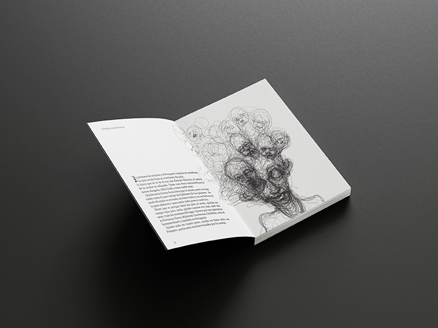
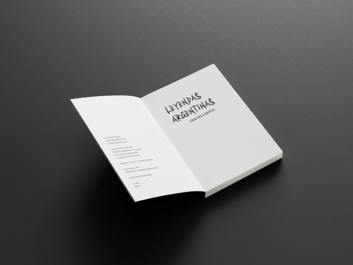
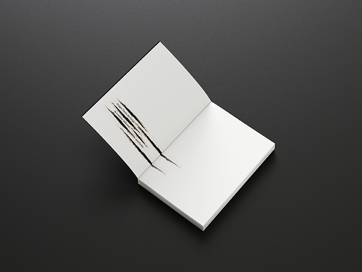
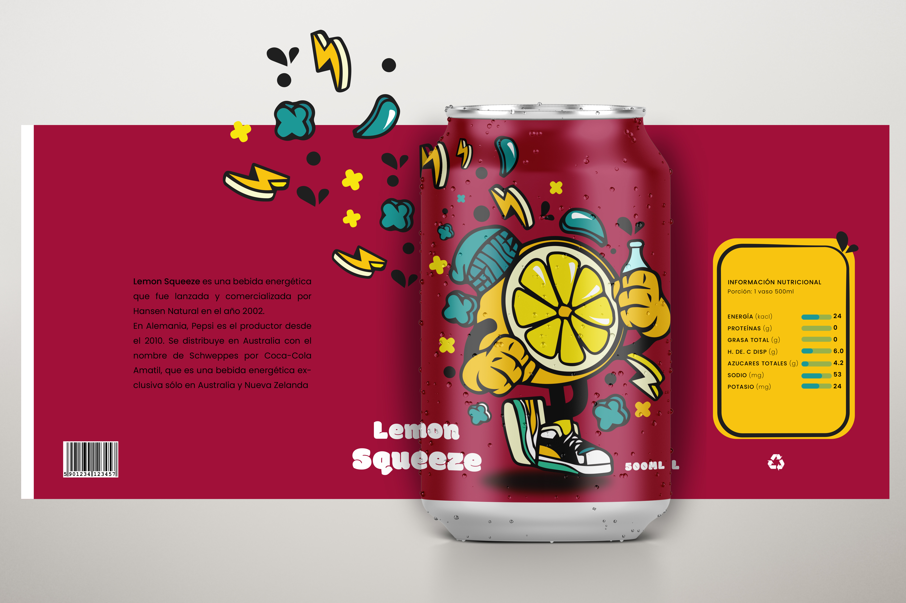
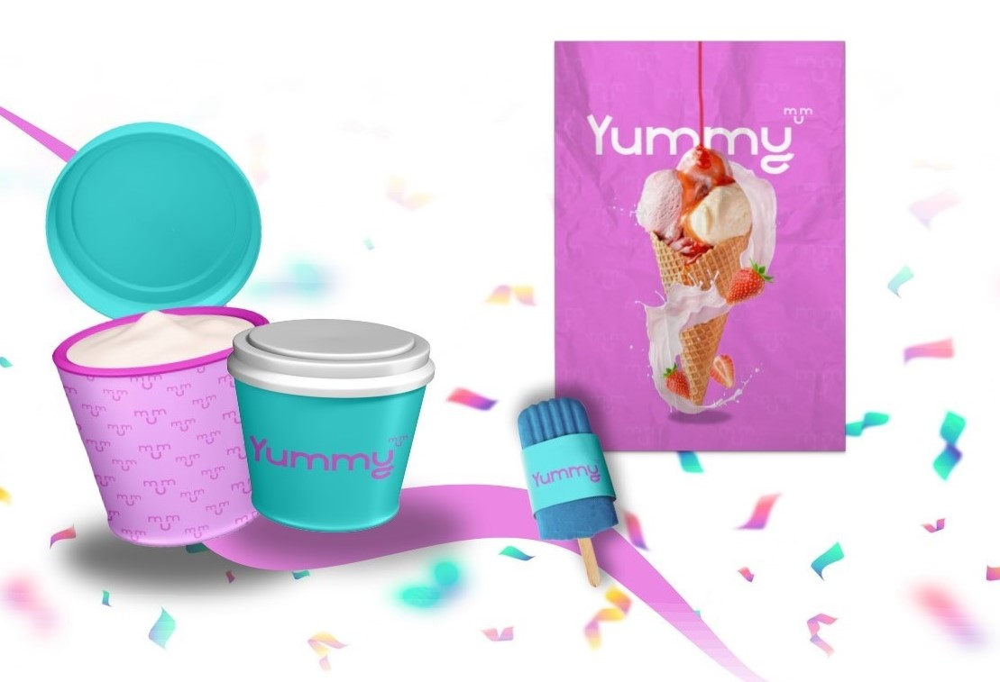
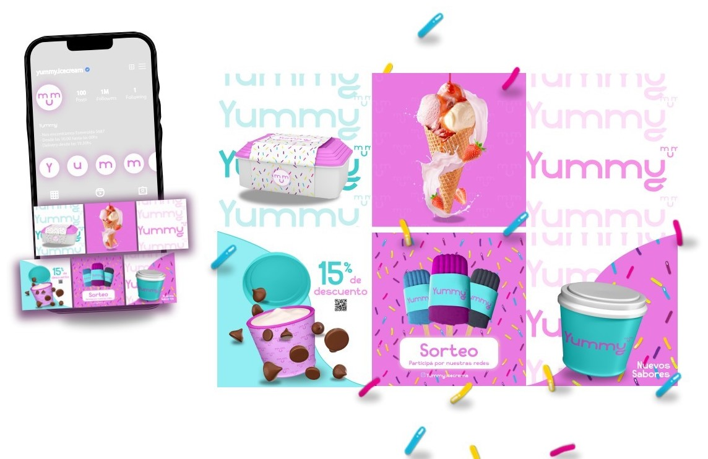

- Secundario: Bachiller en Comunicación Social
- Universitario: Diseño y comunicación visual (en curso)
- Oxford:Lengua Inglesa
Acerca de mí
Me llamo Florencia pero me gusta que me digan Flora, tengo 23 años y soy estudiante de la UNLa en la carrera de Diseño y Comunicación visual, disfruto del proceso de aprendizaje y suelo aprender mucho de los errores del mismo. Soy una apasionada de aprender siempre algo nuevo y de escuchar experiencias. Mis hobbies son: bailar, el gym e ir
Educación:
Mi recorrido
- Diseñadora en Indumentaria (01.04.2023 - actualmente)
- Freelance(2021-actualidad)
Mi experienia
A lo largo de mi trayectria pase por muchos rubros, como por ejemplo: gatronomía, recepcionista, etc. Pero actualmente trabajo como freelancer, decicandole ya casi 3 años, realizando trabajos de impresión y diseños digitales.Manejandome de manera independiente y afortunadamente aprendiendo de mis errores. Hace no mas de 3 meses comencémi emprendimiento de prendas estampadas, al comienzo no creía que iba a tener mucho éxito, pero por suerte el boca a boca es mi mejor publicidad. Instagram tambi&en se ha convertido en una red social muy fundamental para mí, gracias a ese medio puedo compartir muchos de mis trabajos con la gente y me da mayor visibilidad. Soy muy apacionada con lo que hago y trato de dedicarle mi 100% para logar sustentarme únicamente con el fruto de mi trabajo, aunque a veces me llegue a mi limite realmente lo disfruto mucho. Actualmente también soy diseñadora en la empresa Crearte, ubicada en Lomas de Zamora, en donde estoy ubicada en el sector de diseño, encargada de realizar únicamente los diseños que llevaran bordados o estampados cada prenda. Tambi&en formo parte de Th.Ar.Marketing una agencia de marketing digital. Trabajando en equipo con otros cerebros. Cada uno cumple un rol fundamental para el paquete de marketing que suele abonar el cliente. Espero que les haya entretenido mi relato, a continuación les dejo algunas imágenes de trabajos realizados.
Mis trabajos





